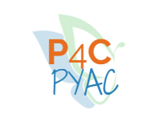

Skip to Content
Home
About
Contact
Parents
Blog
Possibilities for Change Youth Assessment Council

Possibilities for Change (P4C) to communicate with adolescents interested in serving on their Youth Advisory Council (YAC), or adolescents that are already on the YAC.